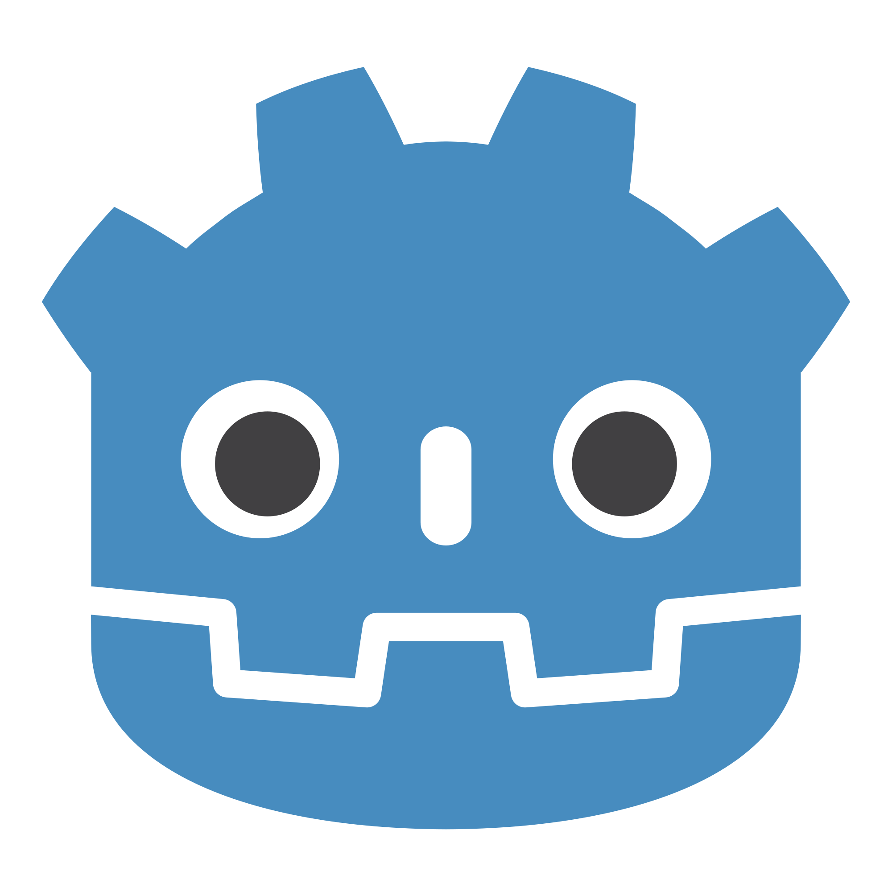
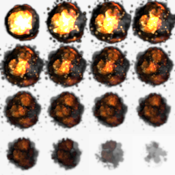
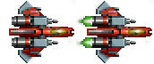
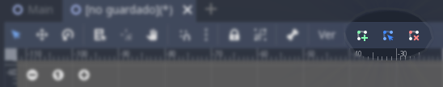
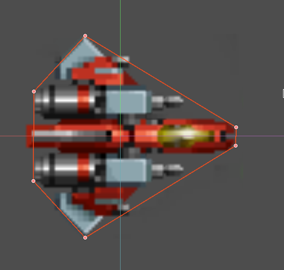
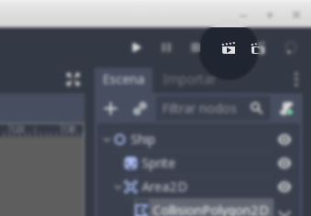

Godot Engine
Free Videogames engine

Nodos (Por colores)
- Control (verde)
- 3D (rojos)
- 2D (azules)
- Animaciones (violeta)
Características de los Nodos
- Tienen un nombre
- Propiedades editables
- Pueden recibir llamadas
- Extensibles
- Se agrupan en forma de árbol
Sprites y animaciones
- Los sprites son mapa de bits dibujados en la pantalla de ordenador
- normalmente son pequeños y parcialmente transparentes
- Se usan en videojuegos para crear gráficos y animaciones
Sprite en la wikipedia
Ejercicio: Sprite animado (con código)
- Salvar la imagen anterior en
una carpeta del disco duro
- Añadir la imagen como recurso en godot
- Añadir un nodo de tipo sprite
- Ajustar la propiedad Texture
- Ajustar vframes y hframes
Ejercicio: Sprite animado (código)
extends Sprite
var num_frames = 0
func _ready():
num_frames = vframes * hframes
func _process(delta):
frame = (frame + 1) % num_frames
### Demasiado rápido
La imagen cambia una vez cada frame. Soluciones:
- Usar **delta** para controlar el cambio de frame
- Usar un *Animation **Player**
Ejercicio: Sprite animado (AnimationPlayer)
- Borrar el script del sprite
- Añadir nodo AnimationPlayer
- Ajustar el animation player para que realize la
animación
Crear otra escena
con una animacion de explosión usando este
spritesheet

Nuestra nave para asteroids

Vamos a crear una "escena" para la nave
- Es una escena, pero también
un asset
- Es decir, que podemos usarlo en otra
escena como si fuera un componente más, solo
que más complejo
-
Godot
Assets
### Componentes de la nave
- El nodo raiz va a ser un [Node2D][Node2D]
- A ese nodo añadimos:
- Un [Sprite][Sprite]
- Un [Area2d][Area2d]
- Al Area2D, añadimos un [CollisionPolygon2D]
[Node2D]: http://docs.godotengine.org/en/3.0/classes/class_node2d.html
[Sprite]: http://docs.godotengine.org/en/3.0/classes/class_sprite.html
[Area2D]: http://docs.godotengine.org/en/3.0/classes/class_area2d.html
[CollisionPolygon2D]: http://docs.godotengine.org/en/3.0/classes/class_collisionpolygon2d.html
### El nodo raiz Node2D
El Node2D es un nodo muy sencillo.
Pero tiene características que nos interesan:
- Puede ser parte de un árbol
- Tiene coordenadas x e y
- Puede dibujar en pantalla (si hace falta)
- Es habitual usarlo como nodo padre de una escena
### Cambiamos el nombre del nodo
- Vamos a llamar al nodo raíz Ship
- Comprobar que esta centrado (posición 0,0)
y sin modificaciones de escala, rotación, etc...
### Añdimos el Sprite de la imagen
- Añadimos un nodo sprite como hijo de Ship
- Asignamos la textura de la nave al sprite
- Ajustamos las propiedades en Animatión para decirle
que es un _spritesheet_ de 2x1
### Los Nodos Sprite
- Sirven para presentar imágenes en el juego
- Tienes coordenadas x e y (Relativas
a la posición del padre)
- Lo mismo con la escala y la orientación
### Añadimos un nodo de tipo Area2d
- Los nodos [Area2D] sirven para trabajar con
areas, poder detectar áreas que se
solapan, etc.
- Necesitan tener un nodo hijo de tipo Collision, que
puede ser Un [CollisionShape2D] o un [CollisionPolygon2D]
[Area2D]: http://docs.godotengine.org/en/3.0/classes/class_area2d.html
[CollisionShape2D]: http://docs.godotengine.org/en/3.0/classes/class_collisionshape2d.html
[CollisionPolygon2D]: http://docs.godotengine.org/en/3.0/classes/class_collisionpolygon2d.html
### Los nodos CollisionShape2D
- Permiten, mediante el atributo shape, definir
un área de una determinada forma geométrica:
- Círculo
- Cápsula
- Rectangle
- RayShape
- Otras ...
### Los nodos CollisionPolygon2D
Si la forma del área que necesitamos no se ajusta a
una de las formas predeternimadas del CollisionShape2D,
podemos utilizar este nodo para definir un polígono
de la forma que necesitemos

- Verde: Añadir nodos
- Azul: Modificar nodos
- Rojo: Borrar nodos
Debería quedar algo así

Añadamos algunas caráterísticas propias
- La dirección
en la que apunta la nave
- Velocidad a la que se
desplaza
la nave
- Velocidad a la que puede
rotar la nave
### Añadir script al nodo raiz
Definimos nuestras propiedades:
```
...
var direction = Vector2(1, 0)
var speed = 10
var rot_speed = 0.1
...
```
### Añadir comportamiento (_process)
```
...
func _process(delta):
position += direction * speed * delta
...
```
### Añadir control (_input)
```
...
func _input(event):
if event.is_action('ui_left'):
direction = direction.rotated(-rot_speed)
$Sprite.rotation = direction.angle()
if event.is_action('ui_right'):
direction = direction.rotated(rot_speed)
$Sprite.rotation = direction.angle()
...
```
La escena debería funcionar por si sola
Pulsemos el botón de ejecutar la escena actual

### Observaciones
- La nave se desplazarse a 10 pixels por segundo
- Empieza en 0, 0
- Puede rotar con los botones flecha derecha/izquierda
Cambia las propiedades speed y rot_speed
y ver lo que pasa
### Propiedades editables
Editar en el script de la nave, y cambiar:
```
var speed = 10
```
Por:
```
export (int) var speed
```
### Salvar y seleccionar el nodo raíz, Ship

### Propiedades editables
- La velocidad ahora se puede modificar como una propiedad
- Prueba a cambiar la velocidad y ejecutar la escena
### El movimiento de la nave
- La velocidad de la nave debería ser independiente
de su orientación
- Necesitamos un vector para indicar el impulso o
inercia
- Al acelerar, añadiremos una fuerza (en forma de
vector) a la inercia
### Posicion / Orientacion / Inercia